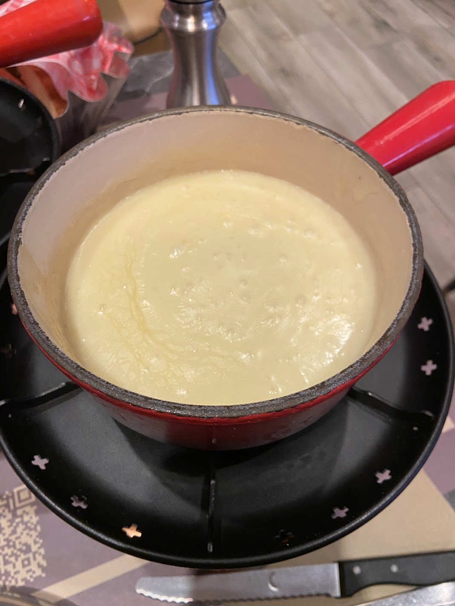
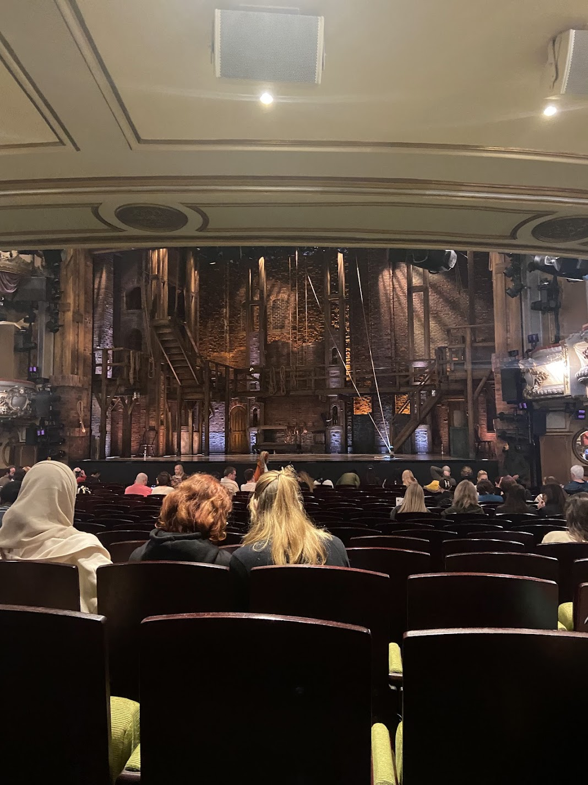
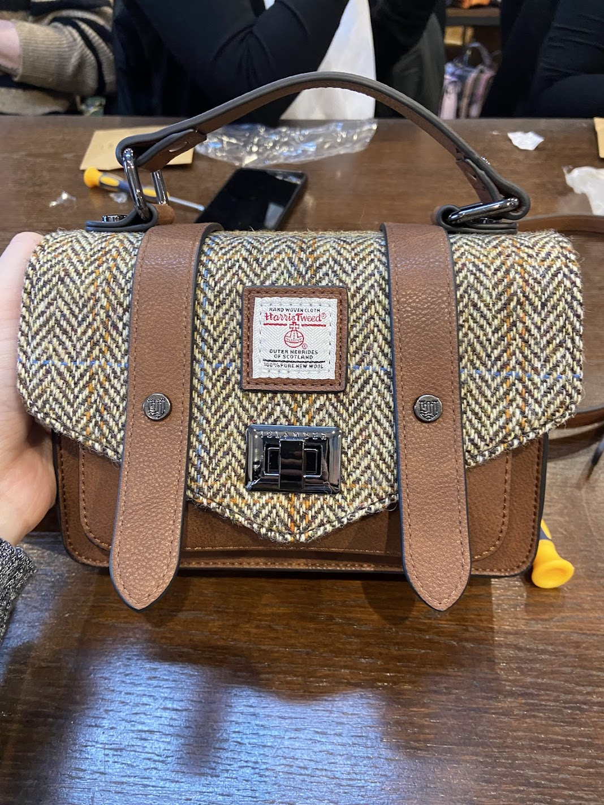

For my from-scratch page I am going to demonstrate my newly acquired web development skills by ranking some of the most memorable experiences I’ve had while studying abroad this semester.
Lyon, France - Most Memorable Experiences
Visiting the Musee des beaux-arts and finding my favorite painting of all time, the flute player by jacque martin
Walking through the streets by the river on our way to the basilica fourviere, and hearing a man play Vienna by Billy Joel on the Saxophone
Having the best food ever, including a waffle covered in chocolate and fresh fruit and incredible ravioli at cafe 203.

Geneva, Switzerland - Most Memorable Experiences
The food!! I had the best steak I’ve ever tasted (it was so expensive but so worth it), swiss chocolate, creme brulee, and fondue with bread and potatoes.
The entire city was so clean. The river was beautiful and blue and had swans in it.I'm going to write a line more of text her because it will look more even.
Our hotel was so cute! IT had 4 little books that I remember reading with my friend while we dressed up and prepared to go out for dinner.
Paris, France - Most Memorable Experiences
I really loved going to the Musee D’Orsay. The impressionist collection is beautiful, and afterwards by got crepes and ate them by the Seine.
I loved going to Disneyland Paris! We ate inside the Pirates of the Caribbean ride and ironically saw a dead rat on the way there (rip Ratatouille)
Walking through Luxembourg gardens and the streets of Paris for hours while catching up with my best friend was one of my favorite things.

London, England - Most Memorable Experiences
Going to see Hamilton on the west end, fulfilling my childhood dream.
The food again was wonderful. I hate an incredible burger and ate at a hot post restaurant.
Having pub food near our hotel was so fun. I had nachos and cheese bread, 10/10 would recommend.
Edinburgh, Scotland - Most Memorable Experiences
Making our own bags at the Islander workshop.
Having the best dessert ever at a restaurant called the Ivy
Going shopping on royal mile and buying souvenirs for my sisters

While walking through the British Museum I thought about this YouTube clip.
This Tableau Chart doesn't have anything to do with the above information, it's just proof that I know how to embed a tableau chart in a webpage.